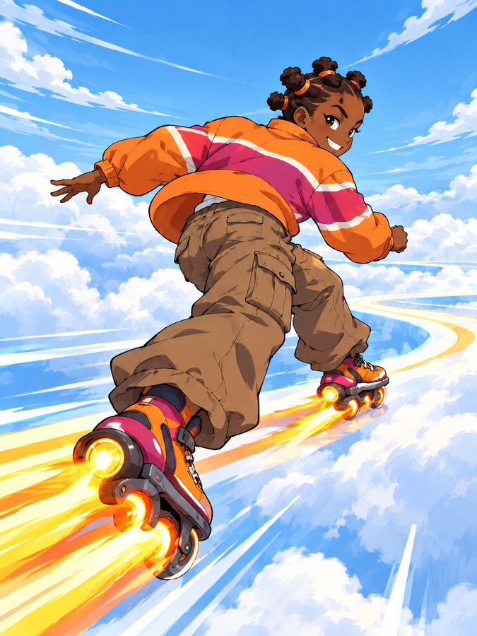
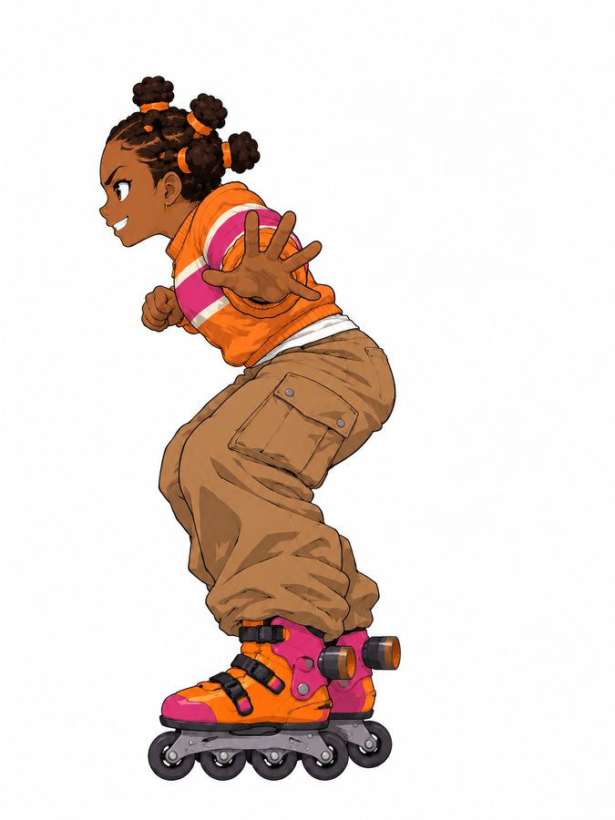

DECISIONS TO TALK ABOUT
Creative calls for Innocent and Quincy. Updated November 4, 2026. Quincy: one answer is needed today, on the Rocket-Skate rider (question 1). The game is due Thursday, November 5 at midnight.
← Back to the 3D gallerySETTLED
- A multiplayer sky-racing game, online, tested locally first. Computer racers fill empty spots later.
- No cars: every racer rides in their own way. Camera behind the racer.
- Real rock, paper, scissors on a timer. The winner chooses a power-up: speed or a trap.
- The look: bright and glossy.
- The stages: Cliff Temple and Mirror Flat.
- First game: the four racers (Cloud Dragon, Spiral, Pink Puff, Centaur Bull), all four now in 3D in the gallery. The other suggested racers come after.
- Power-ups: three, chosen after a rock, paper, scissors win. Quincy's words, 2026-11-04:
Spirit snare , the rocket , and slip. Spirit snare needs to be an aoe and it's timed. Slip would be good for one use while spirit snare youd have to get out of the area to not be slowed. Rocket skate girl could use a different design. As for music I think it should be lowfi music with anime sound effects that would be tough.
- Sky Rocket is the speed power-up.
- Slip Puff is a one-use trap: the first racer to hit it spins out.
- Spirit Snare is a timed area trap: a rune circle that slows anyone inside it until they leave, and fades after a few seconds.
- Every racer gets the same look for each power-up. Quincy did not ask for per-racer versions, so this is the default. It is being built as ticket GW-21.

SKY ROCKET + SLIP PUFFFrom set C 
SPIRIT SNAREFrom set B (the rune circle) - Sound: upbeat lo-fi hip-hop music with anime-style sound effects (whooshes, sparkle stings, impact "shing"s, cute pops). Innocent's style reference is "High-Energy Lofi Hip Hop Beats for a Powerful Workout" by Lofi & Chill Beats (YouTube). We use it only to describe the feel. The track itself is not in the game, because every sound in the game is AI-generated.
- Stage art approved: both sky backdrops, the road and rock textures, and the Cliff Temple (being built in 3D).


1. ANSWER NEEDED TODAY: ROCKET-SKATE RIDER
You said the Rocket-Skate girl could use a different design. Here is the current concept. We redraw her only after you tell us what to change, then she goes on the review queue for your yes before she is built in 3D.


TELL US: What should change: the board and skates, the outfit, the hair, the silhouette, or a whole new concept? A sketch or a reference picture works too. If there is no time for a redesign, say "leave her out" and the game ships with the four racers it has.
2. FEEDBACK ON THE OTHER EXTRA RACERS
Cloud Dragon (riding), Pink Puff and Centaur Bull are built: spin them in the gallery. The four extra racers are on the review queue for feedback only; they come after the first four.
- Spirit-Beast Rider now rides her spirit cheetah. Without spots and face lines it looks more like a lioness: should it get cheetah spots and tear lines back, drawn as glowing light?
- Cloud Rider may look too close to Cloud Dragon from behind (cloud afro, bare chest, heart pants, cloud ride). Change something, or keep him?
- Wind-Ball: anything you'd change?
TELL US: Anything you would change on these three? No rush: they come after the first four.